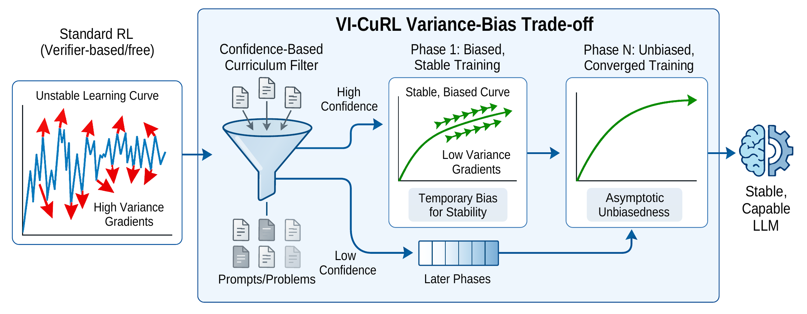
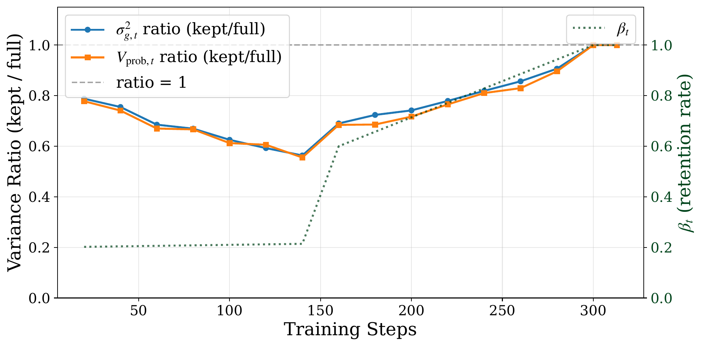
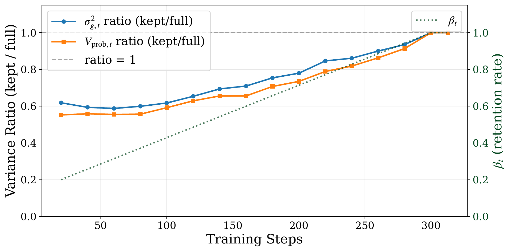

Train first on what the model is sure about.
Reinforcement learning with verifiable rewards (RLVR) needs an external verifier, which is expensive or simply unavailable for open-ended tasks. Verifier-free rewards such as majority vote or entropy remove that dependency, but their noise turns into destructive gradient variance and training often collapses. VI‑CuRL keeps the reward you already have and changes which prompts drive each update: a curriculum built from the model's own confidence, annealed back to the full data.
Video
A narrated walkthrough of the problem, the method, the theory and the results.
A verifier-independent curriculum
VI‑CuRL plugs into a standard GRPO loop. The reward source is unchanged (verifier, majority vote or entropy); only the prompts that drive the gradient update change over training.

Confidence: a prompt-level, verifier-free score
For each prompt we average the normalized entropy of the behavior policy's next-token distribution over sampled responses:
Confidence never acts as a reward and receives no gradient. It only gates which prompts are used to control variance.
One training step
Play with the two ideas behind VI‑CuRL
Both widgets are illustrative toy simulations that run in your browser. They explain the mechanism; they are not paper results.
A principled bias–variance trade-off
Training on a filtered subset introduces bias. The two results below show that the bias vanishes as the curriculum anneals, while the variance terms that destabilize training shrink.
If the per-prompt surrogate loss is bounded, \(|\ell(\theta;x,y_{1:G})|\le L_{\max}\), then
As \(\beta_t\to1\) the curriculum objective converges to the true objective. The bound does not require the confidence score to be correct or calibrated; the retention rate only has to reach one.
Action variance is the spread of gradients across responses to the same prompt; problem variance is the spread of mean gradients across prompts, both measured within the selected set. Masking variance is the cost of partial retention and vanishes as \(\beta_t\to1\).
Does VI‑CuRL really reduce variance?
We measured both variance terms during training on the kept subset and on the full batch (oracle reward). Early on (\(\beta_t\approx0.2\)) the kept subset has 20–45% lower variance; as \(\beta_t\to1\) the ratio returns to one, as the theory predicts.


Explore every number in the paper
Four backbones, six math benchmarks, three reward settings, Pass@1 and Pass@8 (16 samples, mean ± std over 5 seeds). Pick a view below; every chart has a table view.
Why confidence, and why annealing?
BibTeX
@inproceedings{cai2026vicurl,
title = {{VI‑CuRL}: Stabilizing Verifier-Independent Reinforcement Learning
Reasoning via Confidence-Guided Variance Reduction},
author = {Cai, Xin-Qiang and Sugiyama, Masashi},
booktitle = {Advances in Neural Information Processing Systems (NeurIPS)},
year = {2026}
}